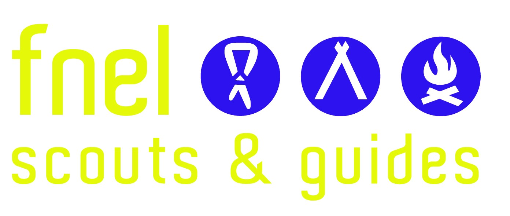

Mamer Wiselen
Éischt Versammlung
2 laang Méint ass et hier, eis läscht Versammlung, de Pow-Wow an der Stad. de Camp a
Norwegen ... an endlech geet et erëm weider
Déi éischt Versammlung vun dësem Scoutsjoer ass:
vu 14h00-16h00
zu Mamer am Home.
Mir sinn deen Dag vill dobaussen, dot iech deementspriechend un.
Wann dir Froen hutt, weider Informatiounen wëllt kréien an iech oder Frënn wëllt
aschreiwen, da kommt ab 13h30 scho bei d’Home.
Déi nei Gruppecheffen offréieren iech, den
Elteren, dee Moment och e Patt a freeën sech
iech kennenzeléieren oder erëmzeginn :)
Wichteg fir d’Wëllefcher: Bréngt eng Foto
erausgeprint oder entwéckelt vun iech mat w.e.g.
Allgemeng Informatiounen a Kontakt während dem Joer
| Beaver (6-8 Joer) | beaver@mamerwiselen.lu |
| Wëllefcher (8-11 Joer) | wellefcher@mamerwiselen.lu |
| Scouten (11-15 Joer) | scouten@mamerwiselen.lu |
| Explorer (16-18 Joer) | explorer@mamerwiselen.lu |
| Grupp | gruppecheffen@mamerwiselen.lu |